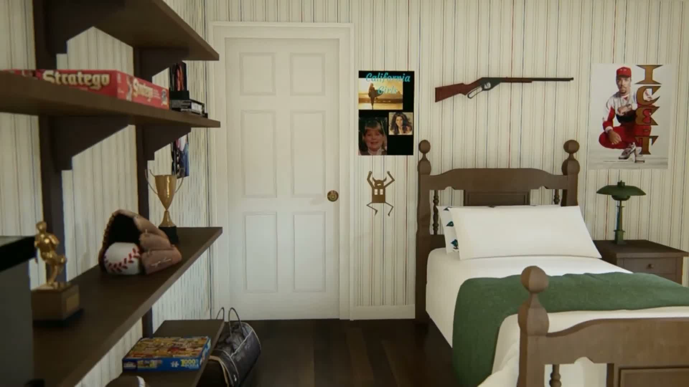
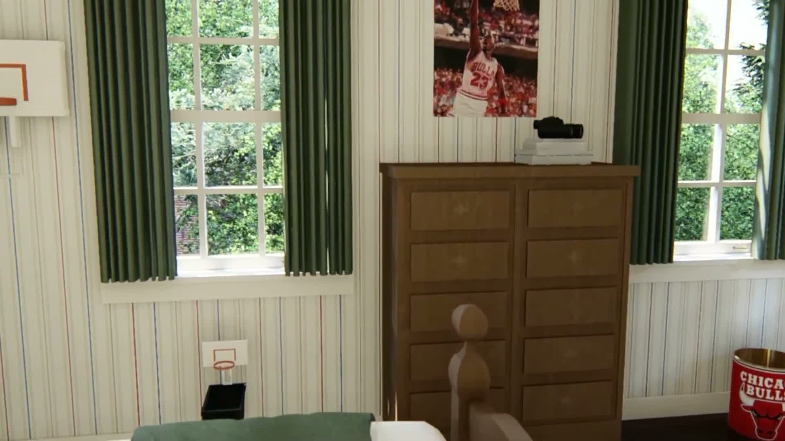
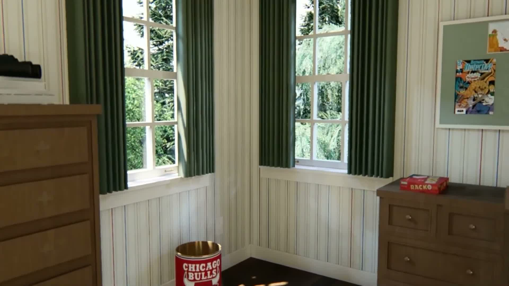
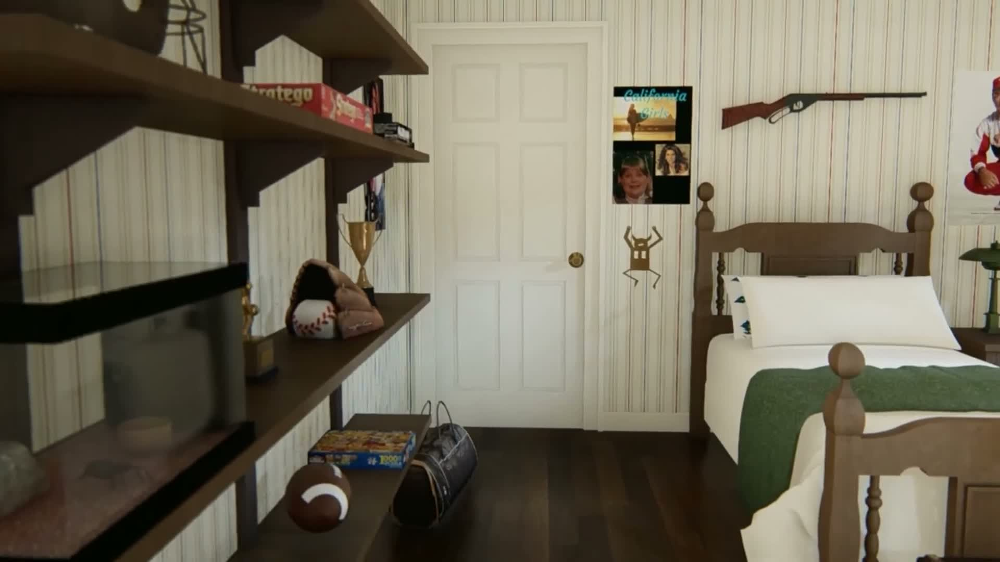
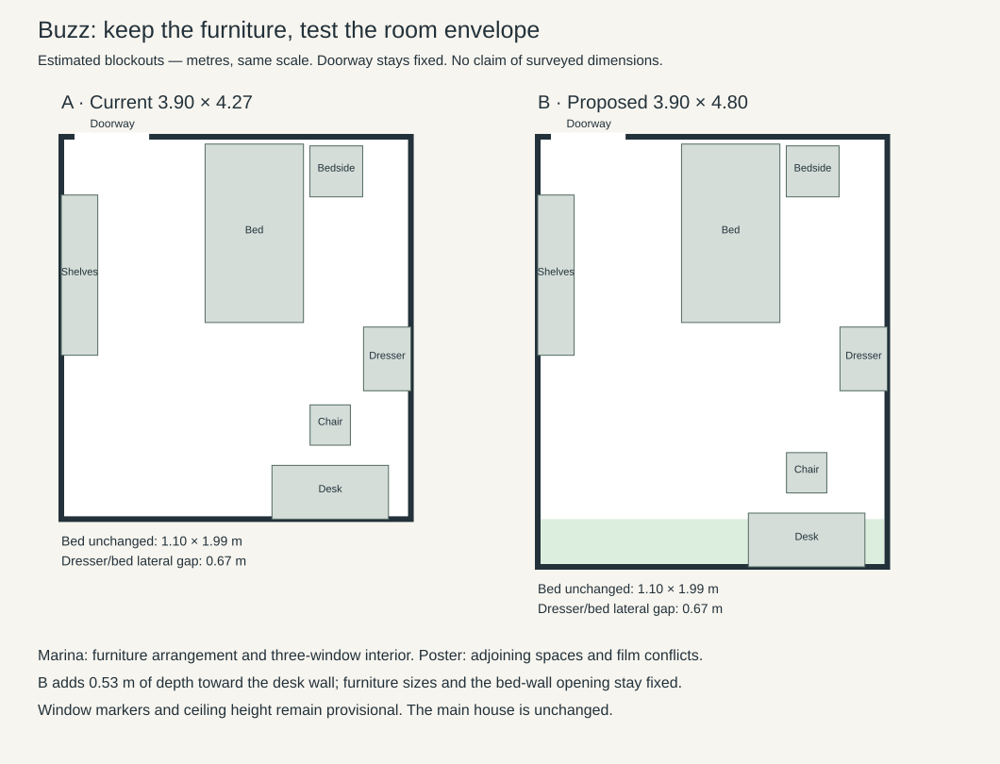

Marina's CG tour is the design target. Yellow dots are manually picked landmarks, not surveyed measurements. Hover over a dot for its name.
The wall-top outline supplies a normalized footprint. Furniture lies below that plane: its positions have parallax. The bed occupies approximately 41% of apparent depth; the study currently assumes 47%. This is an unresolved difference, not permission to stretch the room.



Measurements, assumptions and remaining validation gates
The joint door/headpost candidate predicts the headposts in a new 9:19 frame within 4.64 and 8.31 pixels. Only that frame’s camera pose used its door corners. Room depth remains unresolved; the headboard stand-off hits its zero bound.

Cyan = observed, orange = predicted. The near footpost fails while the distant headposts fit. This candidate must not set room dimensions.
Estimated candidate B is now running: 3.90 × 4.80 m. Same furniture sizes, fixed bed-wall doorway. This is a practical design hypothesis; dimensions have not been recovered from the poster.
